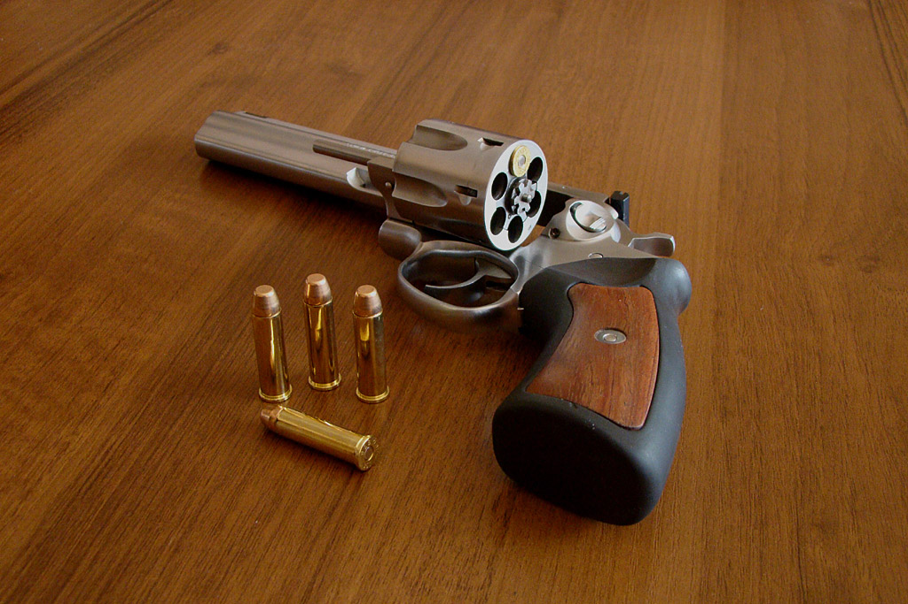

The Ruger GP100 is widely regarded as one of the most robust and reliable double-action revolvers ever produced. Introduced in 1985, it was engineered by Sturm, Ruger & Co. to handle a continuous diet of heavy .357 Magnum cartridges. Its design features a unique integrated sub-assembly and a solid steel frame, making it a favorite for law enforcement, self-defense, and target shooting.
| Feature | Standard Ruger GP100 |
|---|---|
| Type | Double-action/single-action revolver |
| Caliber | .357 Magnum (also accepts .38 Special) |
| Capacity | 6 rounds (standard) or 7 rounds |
| Barrel | Length 4.2 inches (standard; variants from 2.5" to 6") |
| Weight | ~40 oz (1.13 kg) for standard 4.2" model |
| Sights | Ramp front, adjustable notch rea |